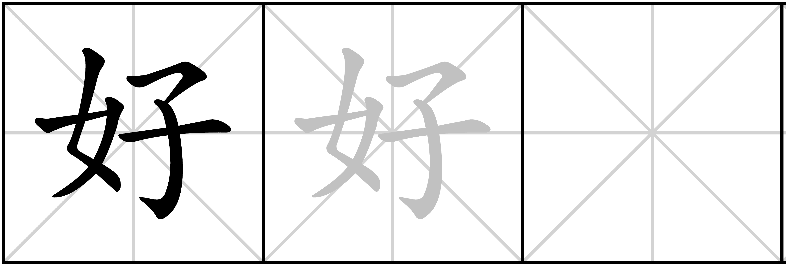
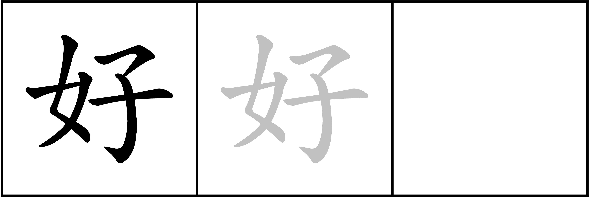

Tool to create worksheets for Chinese character writing practice
Create a pdf (A4 format) for practicing Chinese character writing. Internet connection is required.
If you are new to this tool, just fill out the first two fields and click "Create PDF!" to get a glimpse of what it does.
__________
Per character, there are 10 squares for students to practice writing the sign (and one square in front of them displaying the sign). In how many of those 10 squares should the sign be written in grayscale to support practicing? Lower numbers for more advanced students.
With gridlines: 
vs.
vs. without gridlines: 
You might have to allow pop-ups for this page. Further, if this settings results in a new window or tab depends on your browser (settings).
Sometimes, the created PDF document looks slightly different in the browser's preview. To see the actual result, open it in you favorite desktop PDF viewer. (You can still save the document when choosing one of the window/tab options. Simply hit Ctrl+S or right click and choose "Save Page as...".)
Yet another Chinese learning-something tool?
Yes, as I was kinda surprised when my Chinese teacher used a tool she paid for to do exactly this.
Error handling
What to do if something went wrong. Try those suggestions:
This tool heavily uses the internet. Make sure you are connected and wikimedia.org, cors.io and glosbe.com are accessible. (You can find the links in the "This tool uses..." section.)
If it says "PDF created" but you did not get the PDF, try choose a different option under "Way of receiving PDF". "Download" usually works. Also refer to Footnote 4.
Try to choose different characters and leave all the other fields blank / at their default value.
If this solves your issue, please report about both the input that did not work and the one that did on the Github Issues page or by contacting me.
There is some character you entered which is not written on the worksheet? Please post that character(s) on the Github Issues page or contact me. The reason is probably the font this project has to use, see here.
Note that this is an open source project, therefore it is dependent on open source fonts (unlike said paid website, which uses Microsoft's proprietary KaiTi). AR PL UKai does not seem to be developed anymore. Yet, AR PL UKai CN seems to be the best choice in open source regular script fonts.
Do you know some better open source, regular script font? Please file an issue suggesting it!